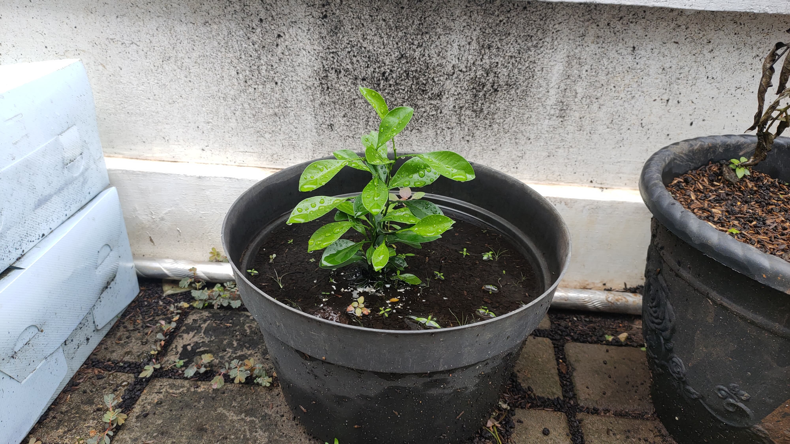
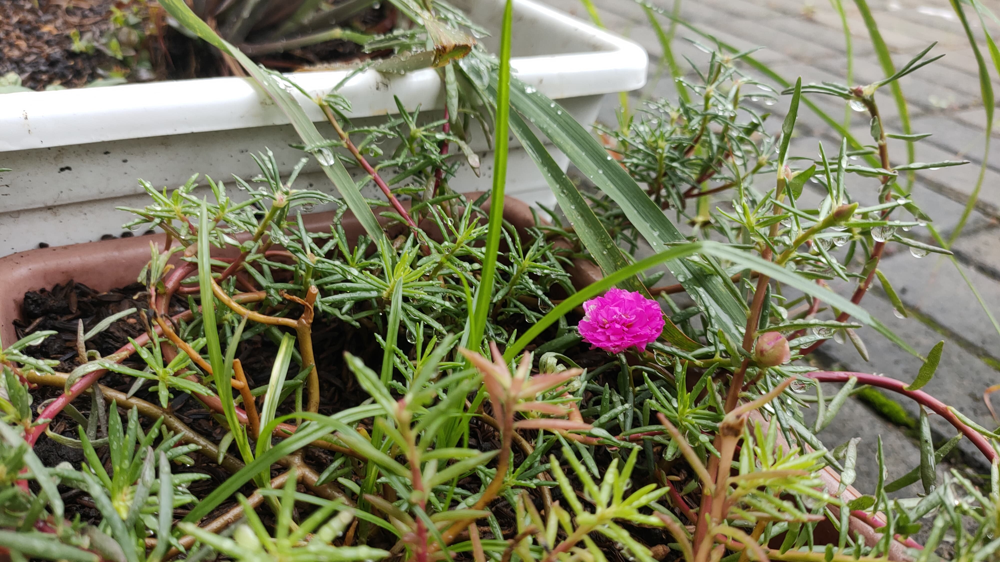
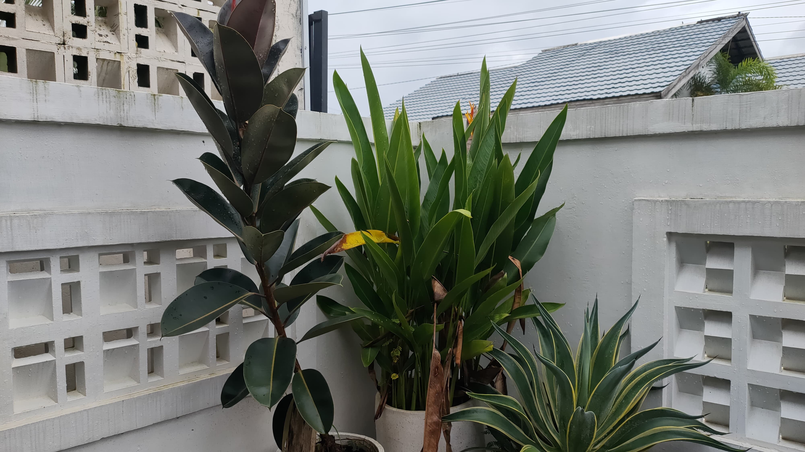
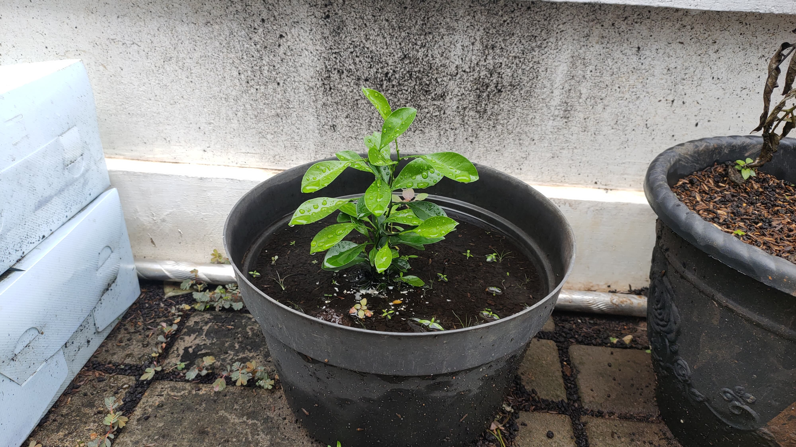
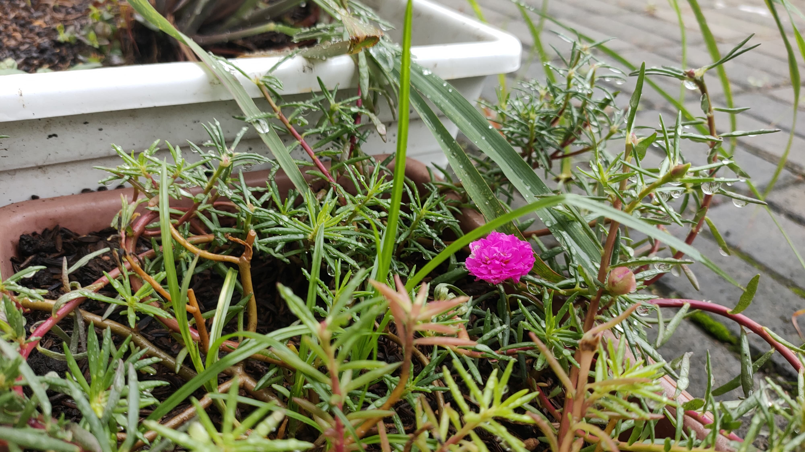
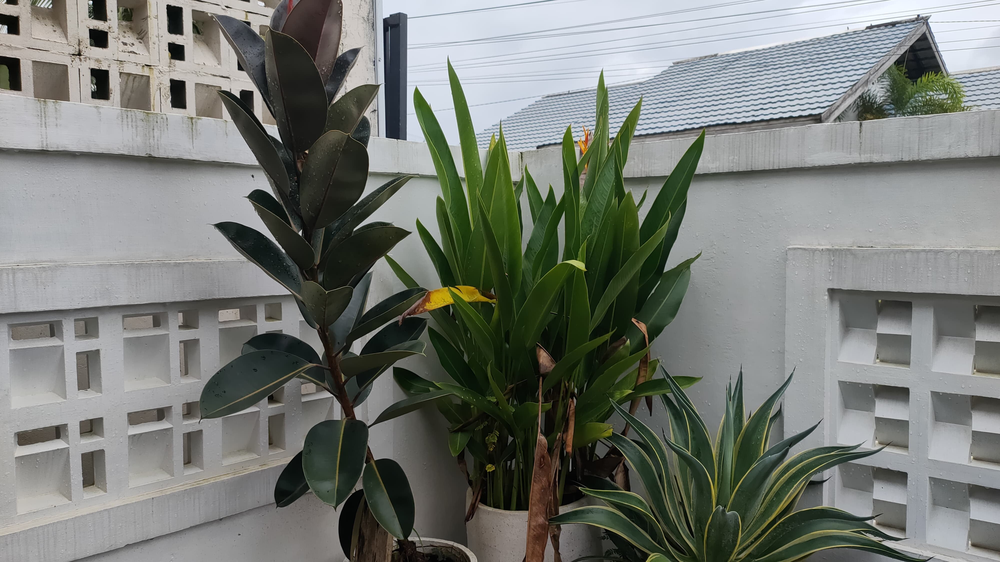
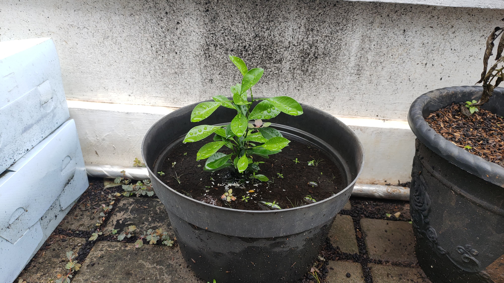
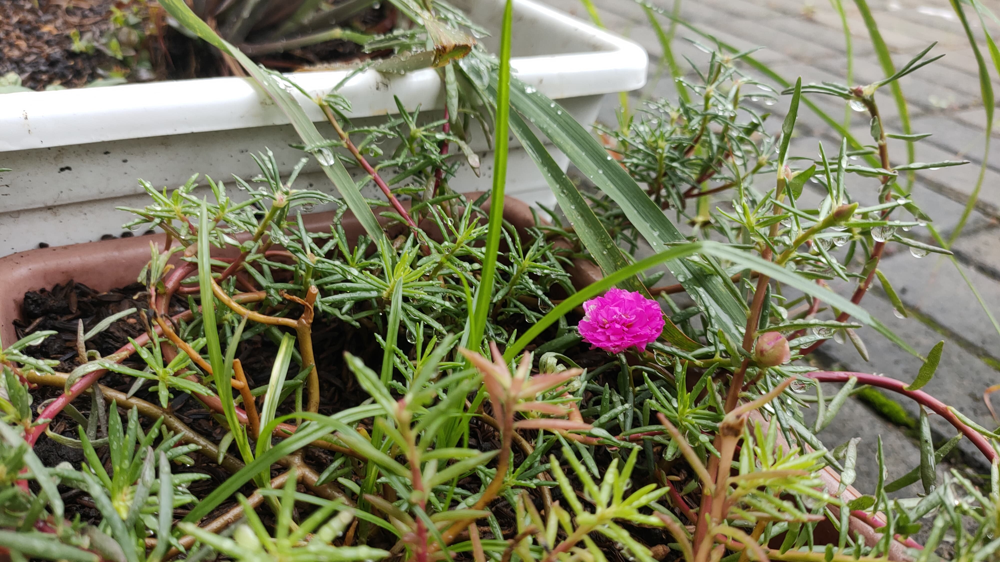
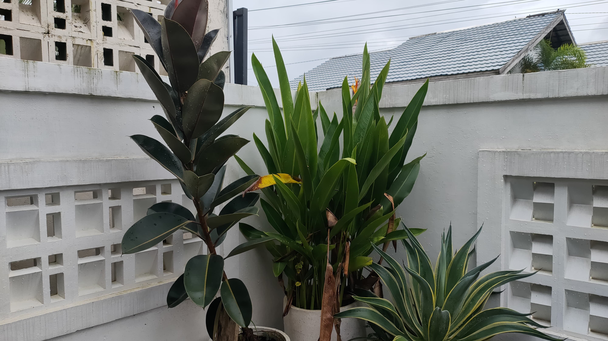

Prinsip budidaya berbasis pengendalian hama, penggunaan pupuk kompos, pengelolaan sumberdaya yang terpadu, dan memperhatikan kelestarian lingkungan perlu diterapkan dalam konsep pembangunan sektor pertanian dapat layak secara ekonomi, sosial, dan berkelanjutan pada masa mendatang (Wihardjaka, 2018).
Prinsip Dasar Pertanian Organik menurut IFOAM (1992) dalam budidaya tanaman organik haruslah memenuhi kriteria-kriteria sebagai berikut:
Dalam pertanian organik, lokasi kebun harus bebas dari bahan-bahan sintetik yang terkontaminasi. Oleh sebab itu, pertanaman organik tidak diperbolehkan dekat dengan pertanaman yang menggunakan pupuk buatan, pestisida kimia, dan bahan-bahan lain yang tidak diizinkan. Apabila tanah sudah tercemar, tanah tersebut tetap bisa digunakan, tetapi perlu dilakukan konversi selama dua tahun dengan menerapkan pengelolaan berdasarkan prinsip pertanian organik.
Pilihlah varietas tanaman yang sudah beradaptasi dengan baik di daerah tempatnya ditanam dan tidak menyebabkan dampak negatif terhadap lingkungan.
Dalam pola tanam, sebaiknya mengikuti prinsip-prinsip konservasi tanah dan air serta mengedepankan wawasan lingkungan untuk mencapai pertanian yang berkelanjutan.
Dalam pertanian organik, bahan organik berperan penting sebagai pupuk, seperti kotoran ternak, kompos, pupuk hijau, jerami, mulsa, urin ternak, dan sampah kota yang telah diolah menjadi kompos. Penggunaan pupuk buatan yang mengandung mineral tertentu seperti urea, ZA, SP36/TSP, dan KCl tidak diperbolehkan.
Dalam pertanian organik, penggunaan semua pestisida buatan (kimia) tidak diperbolehkan, kecuali yang telah diizinkan dan terdaftar pada IFOAM. Namun, penggunaan pestisida hayati diperbolehkan dalam praktik pertanian organik.
| Jenis Tanaman | Nama Tanaman | Warna Bunga |
|---|---|---|
| Sayuran | Tomat | Kuning |
| Cabai | Putih | |
| Rempah | Bawang Merah | Ungu |
| Jahe | Tidak ada |


